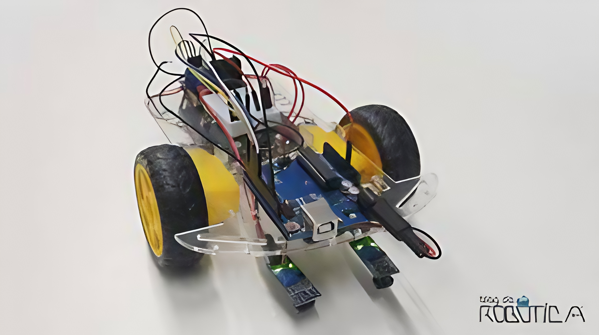

Segue linha
projeto com arduino
Eu fiz dois segue linha, com o mesmo grupo, um em 2023 e outro em 2024, o primeiro foi feito para participar torneio de robotica do Senac, mas tivemos alguns problemas e acabamos desistindo na reta final do projeto, ja o outro foi feito em sala para o curso tecnico em IOT, foram projetos mais simples, mas que acresentaram bastante no meu conhecimento sobre arduino e prototipagem
robo de LEGO
projeto com lego
Esse projeto foi feito para o torneio de robotica do Senac em 2023, ele foi feito ao mesmo tempo que o de lego, esse acabou sendo feito até o final, e usado na competição, mas tivemos problemas com a grande variacao que os motores e rodas do lego davam e acabamos nao conseguido ficar no podium do torneio, mas foi uma experiencia diferente, acho ele mais sem graça que os outros porque toda a programacao era feita em blocos, o que facilitava muito mas tambem deixava menos personalizavel e sem graça
Skipper
App
Esse profeto foi feito em sala como projeto de ano e parte do empreenda Senac, a idéia era diminuir as filas das lanchonetes em campus universitarios e escolas com uma taxa de serviço pequena e grande praticidade para os alunos, alem de tambem reduzir os gastos das empresas com funcionarios, chegamos até a semifinal do empreenda mas acabamos nao passando e descontinuamos o projeto